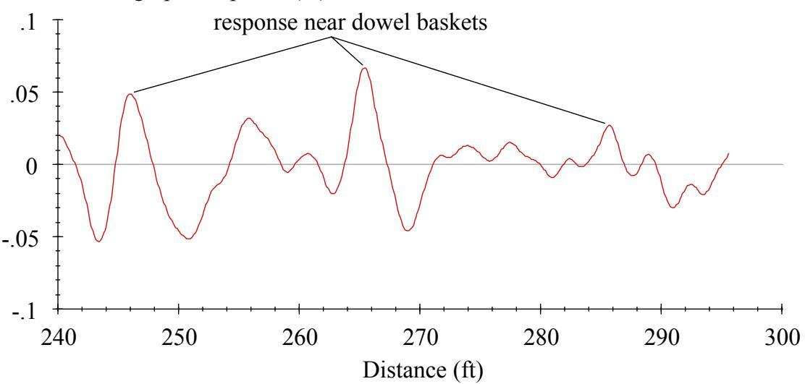
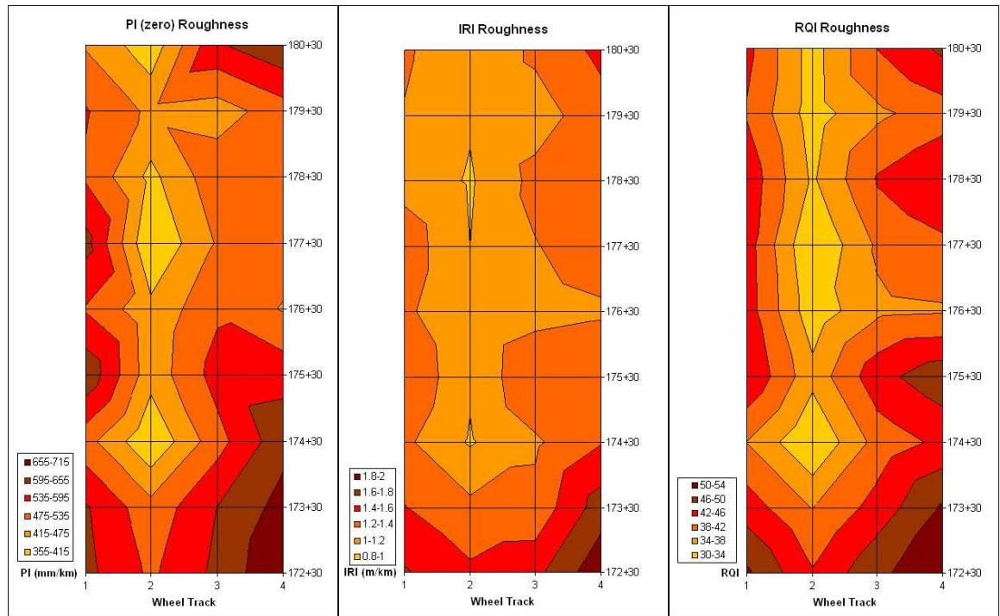
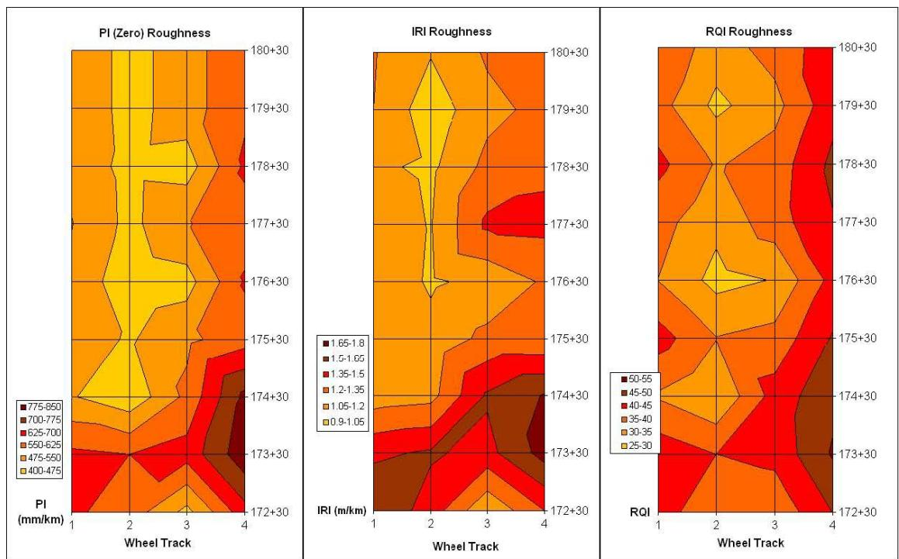

Real Time Profiler (RTP)
A Real Time Profiler (RTP) is an on-site measurement device designed to capture pavement surface profiles while the concrete remains in a plastic state. The system employs laser sensors with specific focal length ranges and can be mounted at various points along the slip-form paving train to facilitate immediate data acquisition [1]. By providing real-time data, the device allows engineers to monitor and adjust construction processes during the placement phase [1]. The measurements obtained from the RTP correlate well with later inertial profiler readings taken after the pavement has hardened [1].
Sources (3)
Key findings
- The RTP revealed non-uniform roughness patterns across slabs, identifying inside wheel tracks as smoother than outside tracks due to dowel bar basket ripple [1].
- Applying an auto-float after the float pan dramatically reduced dowel bar basket ripple and improved slab smoothness, while manual floating provided less consistent gains [1].
- RTP measurements correlated closely with post-cure inertial profiler data, demonstrating the device’s capability as a real-time diagnostic tool for identifying roughness sources and evaluating design changes [1].
- Real-time IRI values from the RTP consistently indicated higher roughness on the paver’s right side compared to the left, matching existing pavement conditions [2].
- The study traced long-wavelength variations in real-time IRI signals to the spacing of stringless robotic total stations and to joint and concrete load spacings [2].
- Contractors used live RTP data to verify that moving total stations closer together improved IRI results, validating the equipment’s utility for optimizing paving operations [2].
Real-Time Profiler Roughness Diagnostics
Real-time profiling involves capturing surface profile data from concrete while it remains plastic, enabling immediate assessment of construction quality [1]. This approach allows engineers to monitor and adjust paving processes on-site before the material hardens [1].
The figure below illustrates how the concrete surface profile evolves over time during this critical window.
 Comparison of pavement surface profiles measured at different stages relative to the paving operation. [1]
Comparison of pavement surface profiles measured at different stages relative to the paving operation. [1]
The figure displays two distinct profile traces plotted against distance, representing measurements taken from a hardened surface and behind the paver.
Research problem — The absence of a real-time sensing system prevents contractors from correcting surface defects while the concrete is still plastic, forcing reliance on costly post-construction grinding [3]. Existing real-time profiler data fails to correlate with standard roughness indices measured on hardened pavement, undermining its reliability for quality control and compliance verification [1]. Sensor vibrations and equipment-induced surface ripples distort real-time measurements, creating inaccurate readings that can mask true smoothness issues or trigger unnecessary rework [2].
State of the art — The Real-Time Profiler is established as a practical on-site profiling system for slip-form concrete paving, utilizing laser sensors to record the elevation of plastic concrete while filtering out specific wavelength ranges [1]. Field validation demonstrates that RTP data reliably track standard roughness indices such as IRI and Profilograph Index measured on hardened pavement, enabling the detection of surface defects like dowel-bar ripple and string-line disturbances [1]. While widely adopted as a real-time quality-control tool to locate problem sources and guide corrective actions during construction, the technology is not yet capable of directly predicting final incentive-program roughness scores [1].
The following figure illustrates a simulated profilograph trace for the passing lane outside.

Simulated profilograph trace showing surface elevation changes near dowel baskets. [1]The figure displays a simulated profilograph trace of the passing lane outside wheel path, characterized by distinct ripples corresponding to three dowel basket locations. These ripples cause upward scallops at the dowel baskets and downward scallops on either side, which significantly increase the Profilograph Index (PI) when no blanking band is applied.
Findings from the reports
- RTP measurements revealed non-uniform roughness across slabs, with inside wheel tracks consistently smoother than outer tracks due to dowel-bar basket ripple [1].
- Applying an auto-float after the float pan markedly reduced dowel-bar basket ripple and improved smoothness metrics, while manual floating provided less consistent improvements [1].
- RTP index values correlated closely with post-cure inertial profiler data, confirming that roughness detected in plastic concrete persisted into the hardened surface [1].
- Real-time IRI values recorded by the RTP were consistently higher than hardened-profile IRI measurements due to sensor vibration and short-wavelength irregularities removed during finishing [2].
- The RTP identified periodic IRI fluctuations at intervals matching stringless robotic total station spacing, enabling contractors to optimize station placement for better smoothness [2].
- RTP data highlighted consistently rougher readings on the right side of the paver due to joint and load spacing effects, allowing for real-time diagnostic adjustments [2].
Novelty & rigor — The novelty lies in deploying laser sensors directly on slip-form paving equipment to capture profile data from plastic concrete, enabling the real-time detection of localized roughness and immediate process adjustments that post-construction methods cannot achieve [1]. This approach is distinct because it integrates continuous in-situ monitoring with robotic control systems to diagnose operational impacts on smoothness, allowing for immediate verification of corrective actions during the paving process [2]. Reproducibility requires mounting specific sensor configurations at manufacturer-defined positions relative to paver components and utilizing structured technical support to ensure accurate data collection and interpretation during active construction [1] [2].
The following figure illustrates the specific sensor configurations and train setup required for this in-situ monitoring approach.
 Sensors mounted to texture and curing machine [1]
Sensors mounted to texture and curing machine [1]
The image displays a large slip-form paving train positioned on a fresh concrete surface under clear skies.
Reported values
| Parameter | Value | Context | Source |
|---|---|---|---|
| hardened profile IRI | 65 in/mi | hardened profiles | [2] |
| IRI fluctuation interval | 350’ | pattern of increasing and then decreasing IRI | [2] |
| real-time profile smoothness | 100 in/mi | real-time profiles | [2] |
The figure below illustrates how the fluctuation interval coding string aligns with real-time smoothness settings.
 Comparison of real-time and hardened pavement profiles showing IRI fluctuations. [2]
Comparison of real-time and hardened pavement profiles showing IRI fluctuations. [2]
The figure displays two plotted lines representing the International Roughness Index (IRI) over a distance, with one line corresponding to real-time data and the other to hardened profile data. Vertical black lines mark intervals of approximately 350 feet where the IRI values fluctuate in a regular pattern, which matches the spacing between the stringless robotic total stations. The real-time profile generally exhibits higher roughness values than the hardened profile, a difference attributed to vibration from equipment operation.
Across the reviewed reports, Real-Time Profiler measurements consistently identified specific sources of non-uniform roughness, such as dowel-bar basket ripple and sensor vibration artifacts, which were confirmed to correlate with or directly influence final hardened surface profiles. Both studies established that the RTP effectively detected spatial variations in smoothness, including track-specific differences and side-to-side discrepancies linked to equipment spacing, thereby validating its utility as a diagnostic tool for real-time process adjustments. [1] [2]
The figure below illustrates the specific RTP surface roughness plots generated for nine 100-meter sections.

Surface roughness plots for nine contiguous sections measured by the Real Time Profiler (RTP). [1]The figure displays three contour maps representing surface roughness data collected across four wheel tracks and multiple station intervals. Rougher sections are represented by darker colors, while smoother sections are represented by lighter colors.
Implications — Practitioners should utilize real-time profilers as diagnostic instruments for identifying specific roughness features and guiding immediate process adjustments, rather than relying on them to predict exact IRI values for incentive compliance [1]. Agencies can leverage the tool’s ability to pinpoint equipment-related sources of roughness in real time to verify corrective actions and meet acceptance criteria, potentially encouraging contractors to adopt such systems for quality control [2].
The following figure illustrates the LISA surface roughness data collected from nine distinct 100-meter sections.

LISA surface roughness plots for nine 100-meter sections [1]The figure displays three contour maps representing PI, IRI, and RQI roughness metrics across four wheel tracks over a longitudinal distance. These plots have been filtered to remove features longer than three meters to highlight the dowel bar ripple contribution to the surface roughness.
Limitations — The profiler is unable to reproduce absolute IRI values on hardened concrete, limiting its ability to directly predict roughness scores used in incentive programs [1]. Measurements are susceptible to distortion from equipment vibrations and short-wavelength surface features that do not reflect final pavement smoothness [2]. Data quality is compromised by sensor interference with tining equipment and sensitivity to the paver’s control system layout, necessitating additional filtering or hardware modifications [1] [2].
The following figure illustrates how specific joint spacing and concrete loads contribute harmonic wavelengths that exacerbate these roughness issues.
 Power spectral density analysis of pavement profiles showing dominant wavelengths associated with joint spacing and concrete loads. [2]
Power spectral density analysis of pavement profiles showing dominant wavelengths associated with joint spacing and concrete loads. [2]
The figure displays a power spectral density (PSD) plot comparing the left profile and right profile of a hardened pavement surface, where the x-axis represents wavelength in feet per cycle and the y-axis represents spectral density. The analysis identifies “15’ joint spacing” and “13’ from concrete load spacing” as dominant wavelengths contributing to roughness in the hardened profile, with a Butterworth band pass applied at 1’ to 30’ to remove long wavelength influence.
Evidence: 3 reports (2 primary)
Related concepts
In this hierarchy
- Parent: Pavement Smoothness
- Sibling: Dipstick Profiler
- Sibling: GOMACO Smoothness Indicator (GSI)
- Sibling: Inclinometer Profiling
- Sibling: International Roughness Index (IRI)
- Sibling: Pavement Profile Scanner (PPS)
- Sibling: Profilograph
- Sibling: SurPRO 2000 Profiler
Related by shared evidence
- Concrete Pavement Joint — shares 3 reports
- Concrete Paving Construction — shares 3 reports
- Dowel Bar — shares 3 reports
- Intelligent Construction Systems — shares 3 reports
- International Roughness Index (IRI) — shares 3 reports
- Pavement Smoothness — shares 3 reports
- Pavement Texture — shares 3 reports
- Auto-Float — shares 2 reports
Similar topics
- Profilograph
- Pavement Smoothness
- International Roughness Index (IRI)
- SurPRO 2000 Profiler
- Inclinometer Profiling
- GPS Pavement Surface Mapping
- Auto-Float
- Dowel Basket Ripple
References
- J. K. Cable, S. M. Karamihas, M. Brenner, M. Leichty, T. Tabbert, and J. Williams, "Measuring Pavement Profile at the Slip-Form Paver," Center for Portland Cement Concrete Pavement Technology, Iowa State University, Ames, IA, Rep. TR-512, 2005. [Online]. Available: https://www.intrans.iastate.edu/wp-content/uploads/2018/03/tr512_pavement_profile.pdf
- National Concrete Pavement Technology Center (CP Tech Center), "Implementation Support for SHRP2 Renewal Project R06E — Real-Time Smoothness Measurements on PCC Pavements during Construction," National Concrete Pavement Technology Center (CP Tech Center), Ames, IA, 2019. [Online]. Available: https://cptechcenter.org/research/completed/implementation-support-for-shrp2-renewal-project-r06e-real-time-smoothness-measurements-on-portland-cement-concrete-pavements-during-construction/
- D. Harrington, R. Rasmussen, D. Merritt, T. Cackler, and P. Taylor, "Long-Term Plan for Concrete Pavement Research and Technology—The Concrete Pavement Road Map (Second Generation): Volume II, Tracks (FHWA-HRT-11-070)," National Center for Concrete Pavement Technology, Iowa State University, Ames, IA, 2012. [Online]. Available: https://www.fhwa.dot.gov/publications/research/infrastructure/pavements/pccp/11070/11070.pdf
Feedback on this page